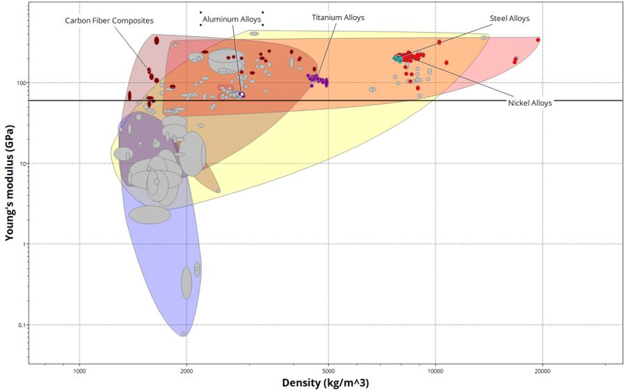

MAE 3610 · Materials Science Team Project · December 2025

This team project used ANSYS Granta materials selection software to identify the best candidate materials for the AH-64 Apache helicopter's main rotor blades, balancing yield strength, stiffness, fatigue life, fracture toughness, and cost against the extreme aerodynamic and centrifugal loads the rotor experiences in flight.
The Apache's main rotor converts engine power into lift while enduring large, fluctuating bending and centrifugal loads — so the material needed high yield strength, high stiffness (to resist deformation and maintain aerodynamic shape), high fatigue strength across millions of loading cycles, and high fracture toughness to keep small imperfections from propagating into blade failure. Environmental resistance to wide temperature swings, corrosion, and erosion rounded out the criteria.
Working from the Apache's published rotor dimensions and operating conditions, the team derived a target minimum yield strength of 847.5 MPa (1.5× the calculated 565 MPa maximum combined stress at the blade root) and a minimum stiffness of 75 GPa.
Applying these constraints in ANSYS Granta eliminated entire material families — plastics, technical ceramics, and PCB laminates — right away. Plotting yield strength, Young's modulus, and fatigue strength against density progressively narrowed the field from a broad set of metals and composites down to carbon fiber composites, fiber-reinforced aluminum, titanium alloys, steel alloys, and nickel alloys.
To compare the surviving candidates on equal footing, the team derived four merit indices from first principles: yield strength versus cost per volume, yield strength versus density, stiffness versus density, and fatigue strength versus density. Across all four, carbon fiber composites consistently outperformed the metal alloys — offering comparable or better strength and stiffness at a fraction of the density, which matters directly for rotor weight, agility, and fuel efficiency.
PEEK/IM carbon fiber met every structural and environmental requirement while offering the lowest density of any viable candidate. Because it's supplied as sheet or tape, the team recommended autoclave molding over faster press-molding alternatives — it's slower and more expensive, but delivers the highest fiber-volume fraction, lowest void content, and most accurate reproduction of the blade's twist and taper, all of which directly improve fatigue life and structural reliability for a component where failure isn't an option.